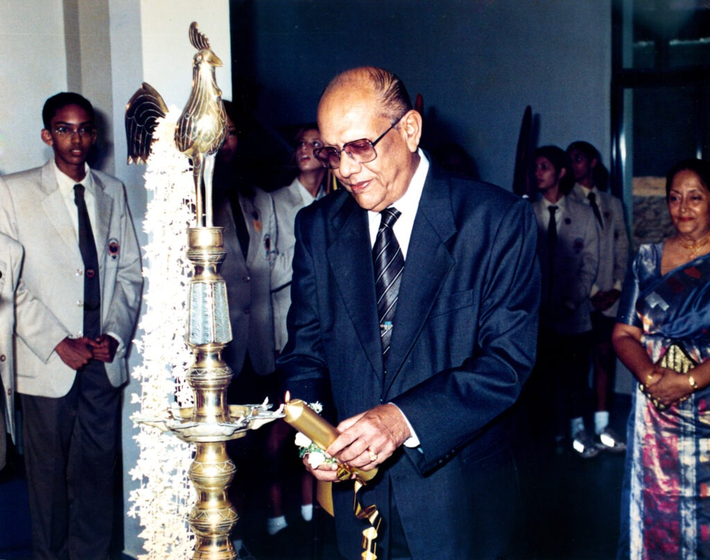

Our Founder, Mr. W.P. Perera, was a man of high achievement. He set the tone for his future success from the time he graduated from Ananda College as Head Boy of the school. From then on his life was a steady upward climb.
He did not think of investing in Education until he was approached by a group of businessmen to be Chairman of a proposed International School. He had begun life as a Tea Planter at Carsons and having worked under British employers, he was well versed in British methods of organization. This was never more noticeable than in the way he ran the fledgling new school which he named 'Asian International School'.
'Siri' Perera retired as a Planter and went into business for himself. He was a proprietary Estate owner and also a Visiting Agent for Carsons. He was an entrepreneur of several interests such as investments in new Banks and Hospitals. He owned five Tea factories and brought in new equipment which was used for the first time in a Tea factory in the island.
As a devout Buddhist he believed in doing charity, and his main interest was the Cancer Society, and thanks to the influence of his wife, Mrs. Manel Perera, the Cancer Association still receives regular supplies of Tea from his estates.
'Siri' Perera remains an icon to the students of AIS. His school lives on as a testament to his vision. AIS was totally his creation and he was willing to undertake the enormous financial burden of building such an Institution. His name will always be remembered with gratitude by many students passing each year out of the school that he founded.
Moments from the life of our Founder.
Discover the founder principal and the board that carried his vision forward.
Founder – Principal Board of Directors{kind=link}
{kind=link}
{kind=link}
{kind=link}
{kind=link}
{kind=link}
{kind=link}
{kind=link}